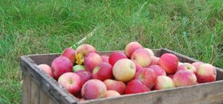

Välkommen till Malva gård
Äpppelmusteriet vid Åsnens Strand. I vårt egenproducerade sortiment hittar ni äppelmust, marmerlader och Småländsk Smoothie - "Smutti" - med frukt och bär från vår egen odling. Vi är helt fria från besprutningsmedel i vår odlingsprocess och har KRAV-certifiering på gång.
Aktiviteter
Denna vecka hittar ni oss på skördemarknad i Gårdsby.
